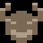
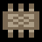
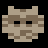
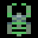

Escape From Castle Matsumoto
Player's Manual
Background
Medieval Japan. An evil daimyo lord has stolen the treasures of Imperial family and hidden them in his castle in an attempt to seize power. As a young Shinobi apprentice, you have decided to sneak into the castle, recover the treasures and return them to their rightful owners to bring prominence to your clan. However, a member of a competing clan has also discovered daimyo's scheme and is on the same mission as you. Do whatever it takes to be the first to recover stolen items and bring honour to your clan.
Objective
Your mission is to:
- find and collect 5 ITEMS hidden in the Castle, and
- escape through a SECRET EXIT
Controls
You can play the game using a Keyboard or a Controller. Keyboard controls have two layouts which
can be used when playing against another player over split-screen with a single keyboard.
During single-player or network games you can use any of the controls (Keyboard A or B, any Gamepad).
| Keyboard A | Keyboard B | Gamepad | |
|---|---|---|---|
| Move | Cursor Keys | WSAD | Analog Sticks D-Pad |
| Action | Enter Right Ctrl |
Space Left Ctrl |
South (A) North (Y) Triggers Start |
| Quick Map | M | Q | West (X) Bumpers |
| Menu | Esc Backspace (web only) |
East (B) Menu |
|
| Pause | P | ||
| Full-Screen | F11 | ||
| Quick Help | F1 | ||
| Online Manual | F3 | ||
| Message | T (network only) | ||
Player's View
Each player's view consists of:
- DEFAULT ACTION the player can perform
-
Six-slot Inventory:
- Map
- Five TRICKS
-
Five ITEM slots which can contain:
- A highlighted Item icon when you are CARRYING the Item
- A greyed Item icon indicating you held and STASHED the Item (*)
- X indicating the Item is in the SAME ROOM as you (*)
- Arrows showing DIRECTION towards the Room with the Item (*)
- TIME LEFT (burning incense)
Actions
Escape From Castle Matsumoto is played using four DIRECTIONS and a single ACTION button.
Action button performs the DEFAULT ACTION shown on screen which depends on what objects are near you: if you are standing next to a Door or Furniture it will show a possible interaction with them. If you are holding an Item or a tool, an appropriate action will show.
If no Default Action is shown on screen, Action button enters INVENTORY.
| View | Left/Right | Up/Down | Action |
|---|---|---|---|
| Roaming | Move Player | Move Player | Default Action (if no action shown, enter Inventory) |
| Inventory | Change Items | Exit Inventory | Select Item |
| Map | - | Change Floor | Close Map |
| Lock | Abort Locking/Unlocking | Set Next Combination Pin | Lock/Unlock (once all pins set) |
| Battle | Punch/Block (when holding Action) |
Punch/Block (when holding Action) |
Hold to be able to Punch/Block |
Mechanics
In order to win the Game, you will need to carry all FIVE ITEMS at the same time and find the SECRET EXIT.
Moving Around
- Use DIRECTIONS to move your player around.
- To pass through a DOOR, approach it and press Action to OPEN it. You can also CLOSE doors that have been opened.
- To climb up/down stairs, simply walk over them.
Items
- Items are HIDDEN in Furniture around the Castle. Approach Furniture and press Action to SEARCH it. If there was an Item hidden inside, you will pick it up.
- You can only carry ONE ITEM AT A TIME, unless you have the BAG.
- If you are holding an Item, you can hide it in Furniture to retrieve it later: approach Furniture and press Action to STASH it. Note that Furniture can hide more than one Item.
- The MAP shows in which Rooms Items are located using an X symbol.
- Depending on game configuration, ARROWS in your Inventory can point to locations of Items.
- Items can also be lying on the ground, if a Player drops them.
Tricks
- To help your chances you can use Shinobi TRICKS from your Inventory to protect Items you've found as well as hinder your opponent's progress. See Tricks section below for details.
Countermeasures
- To counter your opponent's Tricks, you can pick up helpful COUNTERMEASURES from around the Castle. See Tricks section below for details.
Confrontation
- Inevitably you will run into your opponent as you perform your mission, in which case a MARTIAL FIGHT is inevitable. See Battle section below for details.
Exit
- Once you have all FIVE ITEMS, look for a SECRET EXIT somewhere in the Castle. It will look like a broken wall panel.
- Depending on game configuration, Exit might be visible from the START or only from the moment a player acquires all Five Items.
- Once you are in front of the EXIT holding all Five Items, OPEN it like a regular Door and pass through.
Time
- The burning INCENSE represents TIME you have left to escape. Falling victim to Tricks or losing fights will make the incense burn faster.
Map
The MAP shows the layout of the Castle, location of the Player and all Items that are not being carried. Depending on game configuration, it can also show the location of the other Player.
To access the Map, choose it from your INVENTORY (press Action button when in an open spot) or use the QUICK MAP button. Castles have multiple FLOORS; use Up/Down to switch between them. Left side of the Map shows a vertical cross-section of the Castle.
The Map NEVER shows the location of the EXIT.
- X - there's an Item somewhere in this Room
- Flashing Square - Player
- Ladder - Stairs in the room (icon's alignment indicates if Stairs are Up or Down)
- Highlighted Room - visited Room
Castles
There are four CASTLES and one DOJO available in the game.
Layouts of the Castles remain unchanged but locations of Items, Furniture, Doors as well as overall decoration is RANDOMISED each round.
Practice Dojo
A small Dojo for practice.
- Floors: 2
- Rooms: 10
Castle Tsuruga
A narrow and tall castle, characterised by two central staircases.
The original Tsuruga castle is located in Aizuwakamatsu City in Fukushima prefecture and is famous for being a stronghold of the Tokugawa shogunate and its siege in 1868.
- Floors: 5
- Rooms: 17
Castle Matsumoto
A large castle with two towers and many floors.
The original Matsumoto castle is located in Matsumoto City in Nagano prefecture and is one of the most famous castles in Japan, having survived since the sixteenth century without being rebuilt.
It has the nickname Crow Castle due to its black exterior.
- Floors: 6
- Rooms: 23
Castle Edo
A large but flat castle, characterised by an exhibition room.
The original Edo castle was located in central Tokyo and served as headquarters of the Tokugawa shogunate but it has been destroyed by fire in 1873. The Imperial Palace has been rebuilt in its place at a much smaller scale.
- Floors: 2
- Rooms: 20
Castle Azuchi
A smaller castle, characterised by an open centre.
The original Azuchi castle was located in Shiga prefecture and served Oda Nobunaga. It only operated for a few years before being destroyed in the sixteenth century, but was pivotal to development of castles in Japan.
- Floors: 3
- Rooms: 16
Tricks
Your Shinobi has an arsenal of TRICKS they can use to slow down their opponent.
Some Tricks can be set up on FURNITURE, some on DOORS, and some can be placed on the FLOOR.
Most Tricks have a COUNTERMEASURE you can use to avoid them.
To setup a Trick, enter INVENTORY using the ACTION button (when standing in an open spot) and select it.
You CANNOT setup a Trick or pick up a Countermeasure while you're CARRYING an Item; drop the Item on the floor first.
| Trick | Icon | Place | Counter With | Icon | Location |
|---|---|---|---|---|---|
| Yokai |  | Closed Door or Furniture | Mirror |  |
Mirror Stand |
| Combination Lock |  | Closed Door or Furniture | Dagger | Sword Stand | |
| Cat |  | Open Door | Samurai Helmet |  | Samurai Armour |
| Smoke Bomb | On the Floor | - | - | ||
| Magic Smoke | Anywhere | - | - |
Yokai
Yokai are powerful ancient SPIRITS, they will completely SHOCK an unsuspecting Shinobi.
You can entrap a Yokai in CLOSED DOORS and FURNITURE.
Yokai can be neutralised using a MIRROR. You can pick one up from mirror stands in the Castle.
Combination Lock
You can place a Combination Lock on CLOSED DOOR or FURNITURE. When placing a lock, you need to
set a COMBINATION consisting of THREE pins' movements. Each pin can be moved UP or DOWN.
To release the Lock you need the same combination as was used while locking.
If you don't know the combination, you can break the Lock using a DAGGER. Pick it up
from sword stands around the Castle.
Cat
Your trusty feline companion will GUARD an OPEN DOOR and not let anyone through (including you...)
Cat can be scared off using a SAMURAI HELMET. Pick it up from samurai armour displays around the Castle.
While the Cat is magical, it can only be in ONE PLACE AT A TIME.
Smoke Bomb
Smoke Bomb releases a huge CLOUD OF SMOKE into the Room, no one can stay near it for too long. There is NO WAY to counter the Smoke, so you need to go around or wait until it dissipates.
Magic Smoke
If you find yourself in a tight spot, you can use Magic Smoke to REAPPEAR in another place in the Castle. But beware - you will LOSE all your Items and a bit of Time!
Battle
If you run into your opponent in the Castle, you will enter a MARTIAL FIGHT. You will automatically drop any Items you're carrying.
- MOVE in front of your opponent, facing them.
- Press and HOLD Action button to prepare for a martial move.
-
While holding Action, PRESS A DIRECTION to perform a move:
- Towards opponent - Low Kick
- Away from opponent - High Block
- Up - High Kick
- Down - Low Block
- THREE successful hits will force a Shinobi at full health to RETREAT. If you have won a fight but suffered a few hits, avoid another one.
Strategy
It is up to you to find the winning strategy! But here are some tips:
- Until you have the BAG, STASH any Items you find in places you remember and PROTECT with Tricks.
- Keep an eye on your opponent's actions and remember your opponent is watching.
- Only rely on fights if you have no other option as they are difficult to win consistently.
- If your opponent has a big advantage, focus on Tricking them rather than on remaining Items.
- If you can find the Exit or the last Item first... make sure to "prepare" them for your opponent.
Score
The winner is presented with a SCORE and a RANK. The criteria that affect Score are:
- Tricking your opponent: +50 points for each successful Trick
- Use of the Map: -50 points for first use, -5 for each consecutive use
- Finding an Item first: +35 points
- Clearing a Trick setup by your opponent: +25 points
- Falling victim to opponent's Trick: -25 points
- Winning a fight: +20 points
- Losing a fight: -20 points
Ranks are awarded every 50 points, the TOP RANK requires 200 points.
Rules
When setting up a game, you can control a few of its rules.
Rules are combined into pre-set Difficulties, but you can also customize each individually.
| CPU Skill | Harder difficulty will make CPU opponent faster with fewer mistakes |
|---|---|
| Show Exit | Determines if the Exit will be visible from the start or only from the moment one player acquires all items (a bell sound will be heard). |
| Time Limit |
Controls the starting time allocated to each player:
|
| Arrow Guides |
Controls arrows in the Inventory:
|
| Show Other Player | Controls whether the other Player is shown on the Map |
Options
| Full Screen | Toggle between full-screen and windowed modes |
|---|---|
| TV Filter | Apply a retro-style screen effect |
| Camera | Toggle between floating and stationary camera (reduces 3D effect) |
| Movement | Toggles between smooth (modern) and animation-aligned player movement (reminiscent of old games) |
| Highlight | Toggles flat colour highlight of Doors and Furniture when placing Traps or stashing Items |
| Steam IDs | Hides your Steam username and ID for privacy |
| Music | Toggles music on/off |
| Volume | Game volume on a scale from 0 to 10 |
| V-Sync | Toggles GPU sync to monitor's refresh rate |
Multiplayer
Escape From Castle Matsumoto is best enjoyed WITH A FRIEND!
You can play with another player on the SAME COMPUTER or over a NETWORK.
Split-Screen
Play on the same computer using a mixture of keyboards and gamepads/controllers:
- Split Keyboard - one player will use Keyboard layout A, and the other layout B
- Keyboard + Gamepad - one player can use any Keyboard layout, the other uses a Gamepad
- Two Gamepads - use the menu to assign Gamepads to players
- Two Keyboards (certain platforms only) - use the menu to assign Keyboards to players
Steam P2P
In the Steam version of the game you can use Steam's network to directly connect to a friend, without the need to use port forwarding or firewall manipulation, and without revealing your IP address or location.
- One player will be the Host, and the other will need to Join their game
- To Join a player, you can either look them up through Steam's friend list or input their ID directly
- The Host player will have the choice of Castle and game Rules
- You can use Message function from the Menu (or press T) to chat during a match
- You can see the connection latency ("ping") in top-right when connected; under 250 is OK
LAN/WAN
Play using a direct network connection between two machines using UDP/IP protocol. Depending on the network layout this might require changing firewall permissions and forwarding ports.
- One player will be the Host, and the other will need to Join their game
- To Join a player, you will need to input their Hostname (or IP) and Port
- The Host player will have the choice of Castle and game Rules
- You can use Message function from the Menu (or press T) to chat during a match
- You can see the connection latency ("ping") in top-right when connected; under 250 is OK
About
Escape From Castle Matsumoto is a passion project of Mausimus (coding) and Joker (art, music).
The game is free for everyone to enjoy.
We have used some external assets:
- Sound Effects by taira-komori.jpn.org
- Title Font by Eisen Tsunanori
- TV Shader by r57shell
Thank you for playing our game! Check out our other games and projects at:
© 2024 Mausimus. All Rights Reserved.